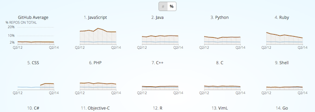

Small multiples should be a familiar visualization technique for most FlowingData readers. The key idea is to slice up your data and use a separate chart to visualize each slice. The end result is a grid of charts that all follow the same visual format, but show different pieces of the data. A chorus of little stories that can help tell a bigger one.
While the concept is simple, the benefits can be significant. Compared to a single larger chart, small multiples can help with overplotting (which is when some data is obscured or occluded because there are too many things being plotted). Compared to animation, small multiples present all of the data at once which makes it easier for viewers to naturally compare each facet with others instead of trying to flip back and forth between views.
FlowingData has covered small multiples and their uses many times over. We have used R to make small multiple bar charts and gridded maps. We have even seen an implementation of area charts that used D3 and provided some interactive capabilities in the form of filtering (which I'll get back to).
Tufte and Few have written pages and pages on small multiples - so I can write another tutorial, right? But even with this content around small multiples, a visualization as versatile as this has plenty more to give.
In this tutorial we are going to take another look at interactive small multiples and explore more possibilities available when we bring this visual to the web.
Specially, I'd like to talk about linked small multiples. Here, all the plots in the small multiple are linked and interact together in some way.
Before we get started with our own, it might be valuable to look at some successful examples of linked small multiples out there to get a sense for what kind of interactions are possible, and how they are getting used.
I've broken down the domain of linked small multiples into four types of interactions. Mostly, this just allows me to make up silly names for the interactions (which probably already have real names anyways), but it helps frame the conversation a bit.
And if you have a better name for one or more of these categories from the vis or UI/UX world, please let me know! There are five broad categories of linked small multiple interactions that we will look at. The visualizations can be:
To clarify a bit, we are focusing on interactions that affect all or many of the small multiple plots at the same time, so tooltips don't count. But if you are interested in small multiples that are interactive at the individual chart level, check out my small multiples with details on demand tutorial for one such example.
This is a common approach where the data is filtered or processed in some way and then the small multiples are updated to reflect this new data. The FlowingData visualization How Americans Spend Their Day, that served as the demo for the last D3 small multiples tutorial, is updateable. The filters update the plots with different subsets of the data to provide a greater exploration experience.
Another Great example of an updateable small multiple is part of a GitHut, a visualization of programming language popularity on Github.
Here, you can toggle between repository count and percent of total for each language, providing both absolute and relative metrics to compare.